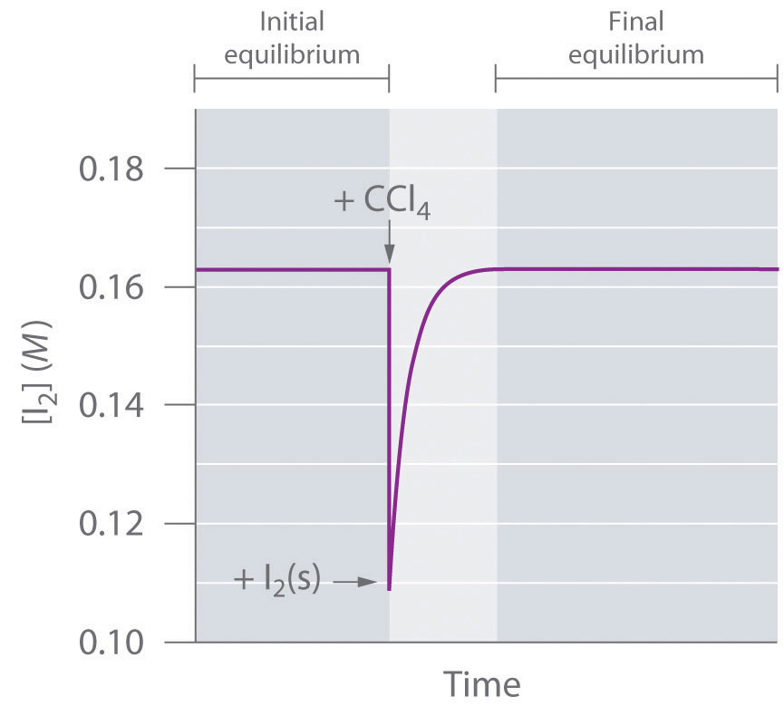
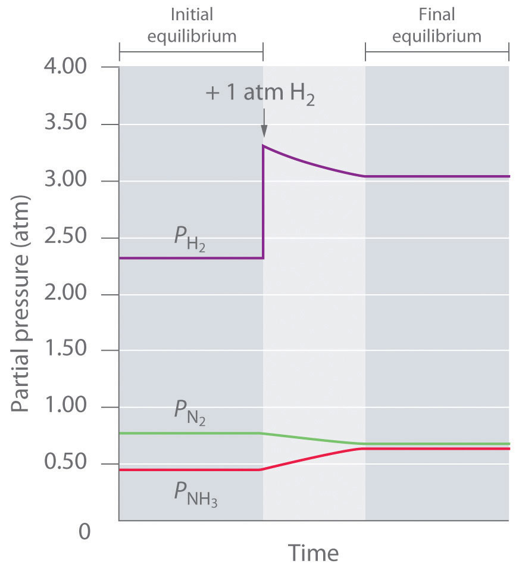

Chemists use various strategies to increase the yield of the desired products of reactions. When synthesizing an ester, for example, how can a chemist control the reaction conditions to obtain the maximum amount of the desired product? Only three types of stresses can change the composition of an equilibrium mixture: (1) a change in the concentrations (or partial pressures) of the components by adding or removing reactants or products, (2) a change in the total pressure or volume, and (3) a change in the temperature of the system. In this section, we explore how changes in reaction conditions can affect the equilibrium composition of a system. We will explore each of these possibilities in turn.
If we add a small volume of carbon tetrachloride (CCl4) solvent to a flask containing crystals of iodine, we obtain a saturated solution of I2 in CCl4, along with undissolved crystals:
Equation 15.33
The system reaches equilibrium, with K = [I2]. If we add more CCl4, thereby diluting the solution, Q is now less than K. Le Châtelier’s principle tells us that the system will react to relieve the stress—but how? Adding solvent stressed the system by decreasing the concentration of dissolved I2. Hence more crystals will dissolve, thereby increasing the concentration of dissolved I2 until the system again reaches equilibrium if enough solid I2 is available (Figure 15.10 "The Concentration of Dissolved I"). By adding solvent, we drove the reaction shown in Equation 15.33 to the right as written.
Figure 15.10 The Concentration of Dissolved I2 as a Function of Time Following the Addition of More Solvent to a Saturated Solution in Contact with Excess Solid I2
The concentration of I2 decreases initially due to dilution but returns to its original value as long as solid I2 is present.
We encounter a more complex system in the reaction of hydrogen and nitrogen to form ammonia:
Equation 15.34
The Kp for this reaction is 2.14 × 10−2 at about 540 K. Under one set of equilibrium conditions, the partial pressure of ammonia is = 0.454 atm, that of hydrogen is = 2.319 atm, and that of nitrogen is = 0.773 atm. If an additional 1 atm of hydrogen is added to the reactor to give = 3.319 atm, how will the system respond? Because the stress is an increase in the system must respond in some way that decreases the partial pressure of hydrogen to counteract the stress. The reaction will therefore proceed to the right as written, consuming H2 and N2 and forming additional NH3. Initially, the partial pressures of H2 and N2 will decrease, and the partial pressure of NH3 will increase until the system eventually reaches a new equilibrium composition, which will have a net increase in
We can confirm that this is indeed what will happen by evaluating Qp under the new conditions and comparing its value with Kp. The equations used to evaluate Kp and Qp have the same form: substituting the values after adding hydrogen into the expression for Qp results in the following:
Thus Qp < Kp, which tells us that the ratio of products to reactants is less than at equilibrium. To reach equilibrium, the reaction must proceed to the right as written: the partial pressures of the products will increase, and the partial pressures of the reactants will decrease. Qp will thereby increase until it equals Kp, and the system will once again be at equilibrium. Changes in the partial pressures of the various substances in the reaction mixture (Equation 15.34) as a function of time are shown in Figure 15.11 "The Partial Pressures of H".
Figure 15.11 The Partial Pressures of H2, N2, and NH3 as a Function of Time Following the Addition of More H2 to an Equilibrium Mixture
Some of the added hydrogen is consumed by reacting with nitrogen to produce more ammonia, allowing the system to reach a new equilibrium composition.
We can force a reaction to go essentially to completion, regardless of the magnitude of K, by continually removing one of the products from the reaction mixture. Consider, for example, the methanation reaction, in which hydrogen reacts with carbon monoxide to form methane and water:
Equation 15.35
This reaction is used for the industrial production of methane, whereas the reverse reaction is used for the production of H2 (Example 14). The expression for Q has the following form:
Equation 15.36
Regardless of the magnitude of K, if either H2O or CH4 can be removed from the reaction mixture so that [H2O] or [CH4] is approximately zero, then Q ≈ 0. In other words, when product is removed, the system is stressed (Q << K), and more product will form to counter the stress. Because water (bp = 100°C) is much less volatile than methane, hydrogen, or carbon monoxide (all of which have boiling points below −100°C), passing the gaseous reaction mixture through a cold coil will cause the water vapor to condense to a liquid that can be drawn off. Continuing to remove water from the system forces the reaction to the right as the system attempts to equilibrate, thus enriching the reaction mixture in methane. This technique, referred to as driving a reaction to completion, can be used to force a reaction to completion even if K is relatively small. For example, esters are usually synthesized by removing water. The products of the condensation reaction are shown here. In Chapter 19 "Electrochemistry", we will describe the thermodynamic basis for the change in the equilibrium position caused by changes in the concentrations of reaction components.
For each equilibrium system, predict the effect of the indicated stress on the specified quantity.
Given: balanced chemical equations and changes
Asked for: effects of indicated stresses
Strategy:
Use Q and K to predict the effect of the stress on each reaction.
Solution:
Exercise
For each equilibrium system, predict the effect that the indicated stress will have on the specified quantity.
Answer:
Because liquids are relatively incompressible, changing the pressure above a liquid solution has little effect on the concentrations of dissolved substances. Consequently, changes in external pressure have very little effect on equilibrium systems that contain only solids or liquids. In contrast, because gases are highly compressible, their concentrations vary dramatically with pressure. From the ideal gas law, PV = nRT, described in Chapter 11 "Liquids", the concentration (C) of a gas is related to its pressure as follows:
Equation 15.37
Hence the concentration of any gaseous reactant or product is directly proportional to the applied pressure (P) and inversely proportional to the total volume (V). Consequently, the equilibrium compositions of systems that contain gaseous substances are quite sensitive to changes in pressure, volume, and temperature.
These principles can be illustrated using the reversible dissociation of gaseous N2O4 to gaseous NO2 (Equation 15.1). The syringe shown in Figure 15.12 "The Effect of Changing the Volume (and Thus the Pressure) of an Equilibrium Mixture of N" initially contains an equilibrium mixture of colorless N2O4 and red-brown NO2. Decreasing the volume by 50% causes the mixture to become darker because all concentrations have doubled. Decreasing the volume also constitutes a stress, however, as we can see by examining the effect of a change in volume on Q. At equilibrium, Q = K = [NO2]2/[N2O4] (Equation 15.13). If the volume is decreased by half, the concentrations of the substances in the mixture are doubled, so the new reaction quotient is as follows:
Equation 15.38
Because Q is now greater than K, the system is no longer at equilibrium. The stress can be relieved if the reaction proceeds to the left, consuming 2 mol of NO2 for every 1 mol of N2O4 produced. This will decrease the concentration of NO2 and increase the concentration of N2O4, causing Q to decrease until it once again equals K. Thus, as shown in part (c) in Figure 15.12 "The Effect of Changing the Volume (and Thus the Pressure) of an Equilibrium Mixture of N", the intensity of the brown color due to NO2 decreases with time following the change in volume.
Figure 15.12 The Effect of Changing the Volume (and Thus the Pressure) of an Equilibrium Mixture of N2O4 and NO2 at Constant Temperature

(a) The syringe with a total volume of 15 mL contains an equilibrium mixture of N2O4 and NO2; the red-brown color is proportional to the NO2 concentration. (b) If the volume is rapidly decreased by a factor of 2 to 7.5 mL, the initial effect is to double the concentrations of all species present, including NO2. Hence the color becomes more intense. (c) With time, the system adjusts its composition in response to the stress as predicted by Le Châtelier’s principle, forming colorless N2O4 at the expense of red-brown NO2, which decreases the intensity of the color of the mixture.
Increasing the pressure of a system (or decreasing the volume) favors the side of the reaction that has fewer gaseous molecules and vice versa.
In general, if a balanced chemical equation contains different numbers of gaseous reactant and product molecules, the equilibrium will be sensitive to changes in volume or pressure. Increasing the pressure on a system (or decreasing the volume) will favor the side of the reaction that has fewer gaseous molecules and vice versa.
For each equilibrium system, write the reaction quotient for the system if the pressure is decreased by a factor of 2 (i.e., if the volume is doubled) at constant temperature and then predict the direction of the reaction.
Given: balanced chemical equations
Asked for: direction of reaction if pressure is halved
Strategy:
Use Le Châtelier’s principle to predict the effect of the stress.
Solution:
Two moles of gaseous products are formed from 4 mol of gaseous reactants. Decreasing the pressure will cause the reaction to shift to the left because that side contains the larger number of moles of gas. Thus the pressure increases, counteracting the stress. K for this reaction is [NH3]2/[N2][H2]3. When the pressure is decreased by a factor of 2, the concentrations are halved, which means that the new reaction quotient is as follows:
Two moles of gaseous products form from 2 mol of gaseous reactants. Decreasing the pressure will have no effect on the equilibrium composition because both sides of the balanced chemical equation have the same number of moles of gas. Here K = [C2H4]2/[C2H2][C2H6]. The new reaction quotient is as follows:
Three moles of gaseous products are formed from 2 mol of gaseous reactants. Decreasing the pressure will favor the side that contains more moles of gas, so the reaction will shift toward the products to increase the pressure. For this reaction K = [NO]2[O2]/[NO2]2. Under the new reaction conditions the reaction quotient is as follows:
Exercise
For each equilibrium system, write a new reaction quotient for the system if the pressure is increased by a factor of 2 (i.e., if the volume is halved) at constant temperature and then predict the direction in which the reaction will shift.
Answer:
In all the cases we have considered so far, the magnitude of the equilibrium constant, K or Kp, was constant. Changes in temperature can, however, change the value of the equilibrium constant without immediately affecting the reaction quotient (Q ≠ K). In this case, the system is no longer at equilibrium; the composition of the system will change until Q equals K at the new temperature.
To predict how an equilibrium system will respond to a change in temperature, we must know something about the enthalpy change of the reaction (ΔHrxn). As you learned in Chapter 5 "Energy Changes in Chemical Reactions", heat is released to the surroundings in an exothermic reaction (ΔHrxn < 0), and heat is absorbed from the surroundings in an endothermic reaction (ΔHrxn > 0). We can express these changes in the following way:
Equation 15.39
Equation 15.40
Thus heat can be thought of as a product in an exothermic reaction and as a reactant in an endothermic reaction. Increasing the temperature of a system corresponds to adding heat. Le Châtelier’s principle predicts that an exothermic reaction will shift to the left (toward the reactants) if the temperature of the system is increased (heat is added). Conversely, an endothermic reaction will shift to the right (toward the products) if the temperature of the system is increased. If a reaction is thermochemically neutral (ΔHrxn = 0), then a change in temperature will not affect the equilibrium composition.
We can examine the effects of temperature on the dissociation of N2O4 to NO2, for which ΔH = +58 kJ/mol. This reaction can be written as follows:
Equation 15.41
Increasing the temperature (adding heat to the system) is a stress that will drive the reaction to the right, as illustrated in Figure 15.13 "The Effect of Temperature on the Equilibrium between Gaseous N". Thus increasing the temperature increases the ratio of NO2 to N2O4 at equilibrium, which increases K.
Figure 15.13 The Effect of Temperature on the Equilibrium between Gaseous N2O4 and NO2

(center) A tube containing a mixture of N2O4 and NO2 in the same proportion at room temperature is red-brown due to the NO2 present. (left) Immersing the tube in ice water causes the mixture to become lighter in color due to a shift in the equilibrium composition toward colorless N2O4. (right) In contrast, immersing the same tube in boiling water causes the mixture to become darker due to a shift in the equilibrium composition toward the highly colored NO2.
The effect of increasing the temperature on a system at equilibrium can be summarized as follows: increasing the temperature increases the magnitude of the equilibrium constant for an endothermic reaction, decreases the equilibrium constant for an exothermic reaction, and has no effect on the equilibrium constant for a thermally neutral reaction. Table 15.3 "Temperature Dependence of " shows the temperature dependence of the equilibrium constants for the synthesis of ammonia from hydrogen and nitrogen, which is an exothermic reaction with ΔH° = −91.8 kJ/mol. The values of both K and Kp decrease dramatically with increasing temperature, as predicted for an exothermic reaction.
Table 15.3 Temperature Dependence of for
| Temperature (K) | K | K p |
|---|---|---|
| 298 | 3.3 × 108 | 5.6 × 105 |
| 400 | 3.9 × 104 | 3.6 × 101 |
| 450 | 2.6 × 103 | 1.9 |
| 500 | 1.7 × 102 | 1.0 × 10−1 |
| 550 | 2.6 × 101 | 1.3 × 10−2 |
| 600 | 4.1 | 1.7 × 10−3 |
Increasing the temperature causes endothermic reactions to favor products and exothermic reactions to favor reactants.
For each equilibrium reaction, predict the effect of decreasing the temperature:
Given: balanced chemical equations and values of ΔHrxn
Asked for: effects of decreasing temperature
Strategy:
Use Le Châtelier’s principle to predict the effect of decreasing the temperature on each reaction.
Solution:
The formation of NH3 is exothermic, so we can view heat as one of the products:
If the temperature of the mixture is decreased, heat (one of the products) is being removed from the system, which causes the equilibrium to shift to the right. Hence the formation of ammonia is favored at lower temperatures.
The decomposition of calcium carbonate is endothermic, so heat can be viewed as one of the reactants:
If the temperature of the mixture is decreased, heat (one of the reactants) is being removed from the system, which causes the equilibrium to shift to the left. Hence the thermal decomposition of calcium carbonate is less favored at lower temperatures.
Exercise
For each equilibrium system, predict the effect of increasing the temperature on the reaction mixture:
Answer:
Three types of stresses can alter the composition of an equilibrium system: adding or removing reactants or products, changing the total pressure or volume, and changing the temperature of the system. A reaction with an unfavorable equilibrium constant can be driven to completion by continually removing one of the products of the reaction. Equilibriums that contain different numbers of gaseous reactant and product molecules are sensitive to changes in volume or pressure; higher pressures favor the side with fewer gaseous molecules. Removing heat from an exothermic reaction favors the formation of products, whereas removing heat from an endothermic reaction favors the formation of reactants.
If an equilibrium reaction is endothermic in the forward direction, what is the expected change in the concentration of each component of the system if the temperature of the reaction is increased? If the temperature is decreased?
Write the equilibrium equation for the following system:
Would you expect the equilibrium to shift toward the products or reactants with an increase in pressure? Why?
The reaction rate approximately doubles for every 10°C rise in temperature. What happens to K?
The formation of A2B2(g) via the equilibrium reaction is exothermic. What happens to the ratio kf/kr if the temperature is increased? If both temperature and pressure are increased?
In each system, predict the effect that the indicated change will have on the specified quantity at equilibrium:
H2 is removed; what is the effect on
Br2 is removed; what is the effect on PNOBr?
CO2 is removed; what is the effect on
What effect will the indicated change have on the specified quantity at equilibrium?
NH4Cl is increased; what is the effect on PHCl?
O2 is added; what is the effect on
Cl2 is removed; what is the effect on
For each equilibrium reaction, describe how Q and K change when the pressure is increased, the temperature is increased, the volume of the system is increased, and the concentration(s) of the reactant(s) is increased.
For each equilibrium reaction, describe how Q and K change when the pressure is decreased, the temperature is increased, the volume of the system is decreased, and the concentration(s) of the reactant(s) is increased.
Le Châtelier’s principle states that a system will change its composition to counteract stress. For the system write the equilibrium constant expression Kp. What changes in the values of Q and K would you anticipate when (a) the volume is doubled, (b) the pressure is increased by a factor of 2, and (c) COCl2 is removed from the system?
For the equilibrium system ΔH° = 284 kJ, write the equilibrium constant expression Kp. What happens to the values of Q and K if the reaction temperature is increased? What happens to these values if both the temperature and pressure are increased?
Carbon and oxygen react to form CO2 gas via for which K = 1.2 × 1069. Would you expect K to increase or decrease if the volume of the system were tripled? Why?
The reaction has K = 2.2 × 10−10 at 100°C. Starting with an initial of 1.0 atm, you determine the following values of PCO at three successive time intervals: 6.32 × 10−6 atm, 1.78 × 10−6 atm, and 1.02 × 10−5 atm. Based on these data, in which direction will the reaction proceed after each measurement? If chlorine gas is added to the system, what will be the effect on Q?
The following table lists experimentally determined partial pressures at three temperatures for the reaction
| T (K) | 1123 | 1173 | 1273 |
| (atm) | 3.000 | 0.3333 | 6.755 × 10−2 |
| PBr (atm) | 3.477 × 10−2 | 2.159 × 10−2 | 2.191 × 10−2 |
Is this an endothermic or an exothermic reaction? Explain your reasoning.
The dissociation of water vapor proceeds according to the following reaction: At 1300 K, there is 0.0027% dissociation, whereas at 2155 K, the dissociation is 1.18%. Calculate K and Kp. Is this an endothermic reaction or an exothermic reaction? How do the magnitudes of the two equilibriums compare? Would increasing the pressure improve the yield of H2 gas at either temperature? (Hint: assume that the system initially contains 1.00 mol of H2O in a 1.00 L container.)
When 1.33 mol of CO2 and 1.33 mol of H2 are mixed in a 0.750 L container and heated to 395°C, they react according to the following equation: If K = 0.802, what are the equilibrium concentrations of each component of the equilibrium mixture? What happens to K if H2O is removed during the course of the reaction?
The equilibrium reaction has Kp = 2.2 × 109 at 298 K. If you begin with 2.0 mol of Br2 and 2.0 mol of H2 in a 5.0 L container, what is the partial pressure of HBr at equilibrium? What is the partial pressure of H2 at equilibrium? If H2 is removed from the system, what is the effect on the partial pressure of Br2?
Iron(II) oxide reacts with carbon monoxide according to the following equation: At 800°C, K = 0.34; at 1000°C, K = 0.40.
The equilibrium constant K for the reaction is 1.9 at 1000 K and 0.133 at 298 K.
Data for the oxidation of methane, in a closed 5.0 L vessel are listed in the following table. Fill in the blanks and determine the missing values of Q and K (indicated by ?) as the reaction is driven to completion.
| CH4 | O2 | CO2 | H2O | Q | K | |
|---|---|---|---|---|---|---|
| initial (moles) | 0.45 | 0.90 | 0 | 0 | ? | |
| at equilibrium | 1.29 | |||||
| add 0.50 mol of methane | 0.95 | ? | ||||
| new equilibrium | ? | |||||
| remove water | 0 | ? | ||||
| new equilibrium | 1.29 |
None of the changes would affect K; (a) Q doubles; (b) Q is halved; Q decreases.
K would not change; it does not depend on volume.
[CO] = [H2O] = 0.839 M, [CO2] = [H2] = 0.930 M; no effect on K
| CH4 | O2 | CO2 | H2O | Q | K | |
|---|---|---|---|---|---|---|
| initial (moles) | 0.45 | 0.90 | 0 | 0 | 0 | 1.29 |
| at equilibrium | 0.215 | 0.43 | 0.235 | 0.47 | K | 1.29 |
| add 0.50 mol of methane | 0.715 | 0.43 | 0.235 | 0.47 | 0.39 | 1.29 |
| new equilibrium | 0.665 | 0.33 | 0.285 | 0.57 | K | 1.29 |
| remove water | 0.665 | 0.33 | 0.285 | 0 | 0 | 1.29 |
| new equilibrium | 0.57 | 0.14 | 0.38 | 0.19 | K | 1.29 |